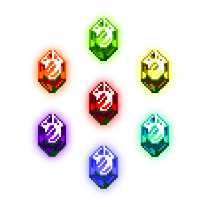
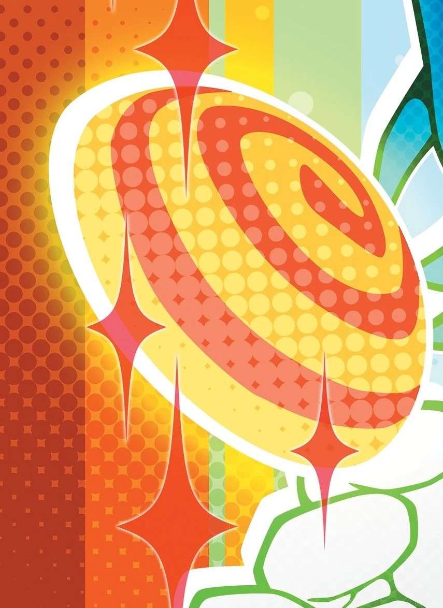
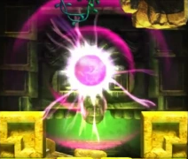
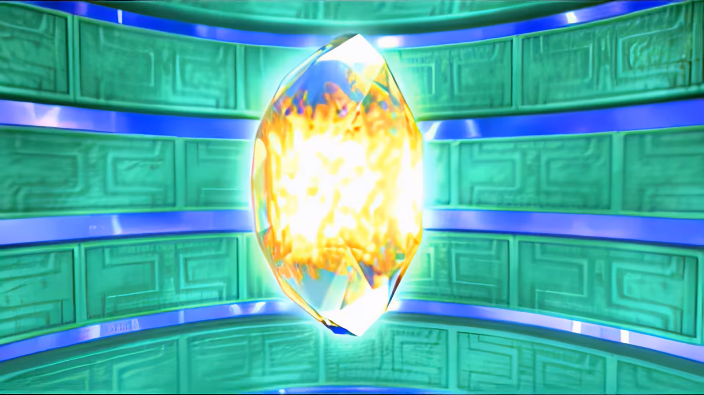
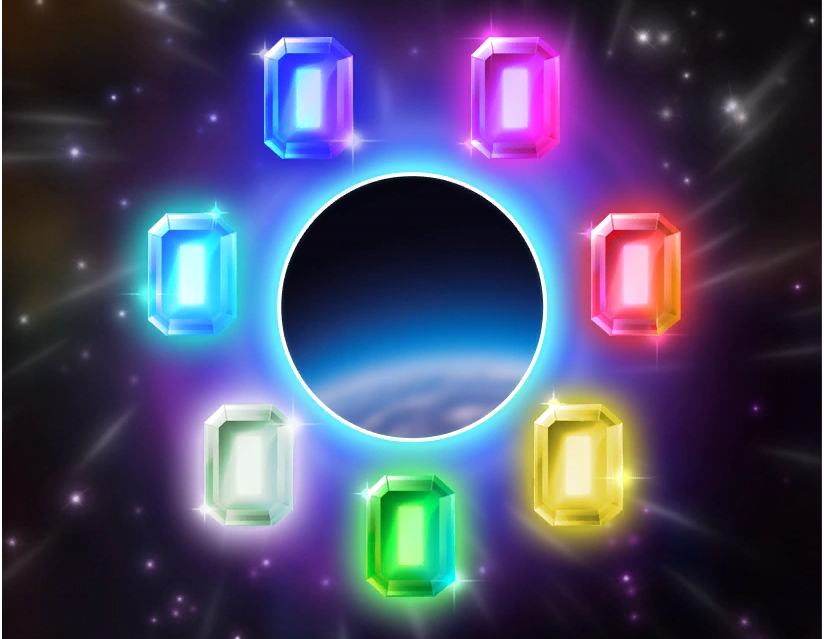

Welcome to the SEGASonic the Hedgehog Universe. This Universe nicknamed the Game Canon, is where all the Sonic the Hedgehog Games, IDW Comics, and the Sonic Prime TV Series takes place. In this universe there are many mysterious and mystical artifacts native to a planet called Earth, which is home to many forms of life including Humans and Anthropomorphic Animals. The Most notable artifacts are the seven Chaos Emeralds which are said to hold incomprehensible power and are thus coveted by many factions both Good and Evil. Chaos runs wild upon this planet as the forces of good and evil condense into the never ending battle between Sonic the Hedgehog and Dr. Ivo "Eggman" Robotnik.
What is Canon?
Almost all Sonic the Hedgehog Video Games (with a few key exceptions), IDW Comics, and the Sonic Prime TV Series is canon to this universe - unless deemed otherwise "Everything is Canon".
 |
 |
 |
|---|---|---|
|
(+ Episode Metal) |
(Whisper of Invasion + Egg Planet Park) |
(Classic Sonic) |
||
(Soft-Canon) |
 |
|
(Modern Sonic) |
||
 |
||
 |
||
 |
||
 |
(Moment of Truth - Rise of Infinite) |
|
 |
 |
|
(Modern Sonic) |
||
 |
 (Despite Inconsistencies) |
 (Cover Stories) |
 |
 |
|
 |
||
(Soft-Canon) |
||
 |
||
Artifacts/Energies
There are many mystical artifacts and eneries within this universe - the most notable being the Chaos Emeralds and Master Emerald. There do exist however other artifacts that resides in pocket-universes/dimensions to this one.
List of Artifacts/Energies |
|
|---|---|
The Chaos Emeralds |
Brought to Earth by the Ancients, the Chaos Emeralds are 7 Diamond-Cut Gems said to harbor unfathomable power, for this reason they're among some of the most coveted items on Earth by factions of both Good and Evil. Often described in ancient times as "Miracle Gems" due to being capable to transforming thoughts into power. Only 7 exist making them very rare. Though these gems are highly coveted they've also known to be very dangerous should they ever fall into the wrong hands - as many civilizations have abused their power and were left as a fleeting footnote in history. |
The Time Stones |
7 Hexagonal-Cut Gems native to Little Planet said to have the power to freely manipulate the dimension of time, allowing for great feats to be achieved such as, turning deserts into lush jungles or a polluted lake into a crystal-clear beautiful one. These gems are also capable of transporting Little Planet across space-time. Sonic once colleced these gems to undo the bad futures set forth by Dr. Eggman during the Little Planet incident, afterwards the stones returned to Little Planet causing the planet to dissapear into space-time. These gems have since not been used again. |
The Master Emerald |
The Master Emerald is the controller of the seven Chaos Emeralds, and what led the Ancients to Earth, after their planet was destroyed. After the extinction of the Ancients, the Knuckles Clan would inherit the same land, and after Pachacamac's Mom died he took control of the tribe and sought to expand their territory. Pachacamac would attempt to seize the Chaos Emeralds invoking the wrath of Chaos who used their power to transform into Perfect Chaos, going on a rampage which would lead them into terminal decline. Tikal, a young echidna girl instilled with her Grandmother's peaceful values, would seal her soul alongside Chaos inside it. The Echidna's would repent for their warmongering ways by guarding it and over the next 3,000 years they'd die out leaving Knuckles the Echidna as the last of his kind and current guardian. |
The Super Emeralds |
Seven large gems created from the Master Emerald empowering the Chaos Emeralds. They've only been used once by Sonic during the first Angel Island Incident and because of this, nothing is known about them besides granting the ultra-powerful Hyper Form. After the incident they disappeared into an unknown dimension and have never been seen again with only cracked stone statues serving as a reminder of their existence. |
The Phantom Ruby |
The Phantom Ruby is a magenta and icosahedron shaped ruby with black ripple patterns on it's surface and is small enough to fit in the palm of a hand. It is an interdimensional gemstone of incredible power capable of manipulating reality by generating an artifical dimension on top of the existing one. Within this virtual reality, those under it's control will percieve every illusion as if it were physically real. This can even include twisting the laws of physics themselves, causing it to twist the very concept of what is real, which would drive anyone insane. During the most recent Incident regarding Angel Island, the Phantom Rubycaused a series of paradoxical events such as rewriting existing locales. It is also shown to be capable of transforming robots such as a specifc group of Eggrobos called the Hard-Boiled Heavies into becoming autonomous, almost living, beings. It's final appearance was during the 6-month-long conflict known as the War to Take Back the Planet, where Dr. Eggman had pecured it and succeeded in conquering the world using mass-produced Phantom Ruby Prototypes that were indestinguishable, yet unstsable, from the real one in terms of power. All of the prototypes were destroyed thanks to the resistance but the location of the real ruby remain a mystery. The last known sighting of the ruby was when a strange series of events began happening around the world. Unfortunately, given the ruby's capacity to alter one's memories, it's incredibly difficult to distinguish which of these claims are real or fust fabrications. |
The Black Onyx |
The Black Onyx is a rounded Onyx gem, black/dark-purple in color, with a symbol on it's surface from the back and front; three loesenges on top, two triangles in the middle and one on the bottom. It alongside the Chaos Emeralds were used by Ancestors of Trip the Sungazer to seal away the Black Dragon. Trip acted as it's guardian it up until the Northstar Island Incident when the Black Dragon, through unknown means, escaped from the Black Onyx and went on a rampage through the Northstar Islands. Super Sonic managed to defeat it with Trip re-sealing the Black Dragon away into the Onyx. As of now the Black Onyx does not appear to have any other abilities besides sealing the Black Dragon. |
The Warp Topaz |
The Warp Topaz is a rounded topaz gem, orange in color with a red spiral on it's surface, said to be capable of warping the fabric of space. The Warp Topaz is capable of creating wormholes and windows to faraway locations, but cannot function without a proper power source - and is a great conductor of energy. However, the Topaz appears to be intolerant of energy sources more powerful than itself (such as the Chaos Emeralds), such exposure results in the Topaz spiraling out of control.It's so sensitive to energy that anything above a light jolt can result in extreme reality distortion. The Warp Topaz was first discovered by the Hard-Boiled Heavies prior to the Northstar Islands Incident, ending up in the hands of Fang the Hunter after his search for a falsified 8th Chaos Emerald. Fang would use it in his Marvelous Queen, allowing it to teleport before being hired by Dr. Eggman. After the Incident, the Topaz would end up back in it's cave through, as of now, unknown means as many years would pass and after the War to Take Back the Planet - it would be found by Dr. Starline. |
Mysterious Orb |
The Mysterious Orb is a magenta-colored orb harboring dark power that rested in a seculded altar within the equally mysterious Lost Labyrinth. It's purpouse and functions are unknown but what is known is that it posseses dark power and grants incredibly destructive abilities to whoever weilds it. Such abilities include: temporary invulnerability, amplified physical strength, energy shockwaves, pillars of electricity, and massive energy spheres. As of right know, Metal Sonic is the only known weilder, and the current whereabouts of the Mysterious Orb remain... well, a mystery. |
Precioustone |
A large, transparent round-cut gem created by Illumina, the Goddess of Dreams, with bright-yellow energy at its center that is the crytalized essence of everyone's dreams. The full extent of its powers are a complete mystery but it serves as Maginaryworld's source since it is a dimension created by the collective dreams of all beings in all dimensions. Illumina's own dream, to make Maginaryworld full of light, is what safeguards it's visitors from nightmares while they dream. However, when Illumina began to doubt herself, a dark part of her took on a life of its own and her existence was split into two halves, Lumina Flowlight and Void. This also caused the Precioustone to shatter, throwing all of Maginaryworld into Chaos as dreams and nightmares became intermixed. To restore the Precioustone, Lumina summoned Sonic, Tails, Knuckles, and Amy by forcing them to fall asleep during their waking hours. Dr. Eggman soon find out about their sudden journey through unknown means and would follow after them into Maginaryworld, though his efforts proved to be entirely fruitless. Given the overarching parallels, there may some connection between the Precioustone and the Reverie, an artifact that can transform dreams into the waking world, however any such comparisons are purely speculative for the time being. |
Gaint Fake/Fake Chaos Emerald(s)  |
The Fake Chaos Emerald and Giant Fake Chaos Emeralds are artificial jewels designed to replicate the same wavelength and properties as the titular gemstones. Their replication is so near-perfect that not even machines can't tell the difference but the true distinction is that the amount of Chaos Energy they can generate is insurmountably low. The first use of the Fake Chaos Emerald was during the Space Colony ARK Incident where Miles 'Tails' Prower constructed the Fake Emerald to overload the Eclipse Cannon. Despite the Setbacks by Eggman and Shadow, Sonic was able to throw the Fake Emerald into the Eclipse Cannon's Energy Field and explode the Cannon, rendering it temporarily inoperable. This Fake Emerald would be left aboard the Space Colony ARK until Shadow rediscovered it during the Time Eater Incident and used it to stall for time in defeating Black Doom. After the War to Take Back the Planet, Eggman would use his knowledge of the Fake Emerald to create giant variants for his Eggperial City. Unlike the Fake Emerald, the Giant Fake Chaos Emeralds were capable of outputting as much energy as the real emeralds and this allowed the city to function as its own entity. These Emeralds were kept restricted by mechanisms that Tails accidentally disabled causing them to grow out of control and threaten to destroy the entire planet. Shadow was able to use the Giant Fake Chaos Emeralds to initiate a powerful Chaos Control and teleport the entire city into the atmosphere where it exploded in a violent blast. |
The World Rings |
Seven large glass-like hoops adorned with a decorative silver patterning on their surface that come in the exact same colors as the Chaos Emeralds.Their purpose is to create and maintain all of the written stories within the Arabian Nights and embody one of seven primal emotions.Those who physically touch one receive a chaotic surge of all the positive and negative experiences relating to that ring's emotion.Additionally, the rings emanate an aura that is so potent, it can drive most of the inhabitants insane. They're so supernatural that not even most of the inhabitants know what they can do, believing them to be nothing more than a myth. But what has been shown through Sonic's travels within the Arabian Nights is nothing short of cataclysmic such as manifesting powerful storms and bringing monsters to life. No one is entirely sure what would happen if all seven were brought together but given that the rings control everything within the Arabian Nights, it might very well be apocalyptic. However, there has not been a single recorded instance of all seven rings being used at the same time by the same wielder so any possibilities remain speculative. During the Arabian Nights Incident, there was a ritual that Erazor Djinn attempted to perform using the seven rings but thanks to Shahra's actions, the ritual was rendered incomplete. The result was Erazor Djinn absorbing four of the rings and transforming into a monster called Alf Layla wa-Layla while Sonic absorbed the remaining three and became Darkspine Sonic. |
The Sol Emeralds |
The Sol Emeralds are seven emerald-cut gems residing within the Sol Dimension, a parallel universe, and strictly guarded by the flame-wielding princess of the Sol Empire, Blaze the Cat. Being almost identical to the Chaos Emeralds in every way except shape and name, the Sol Emeralds are capable of quite an assortment of supernatural abilities. However, unlike the Chaos Emeralds, the Sol Emeralds can "sense" the thoughts of their wielder, allowing them to alternate how much energy they give out based on one's emotional state. Another distinct ability is their access to stable dimensional travel since the Sol Emeralds are the only reliable way in or out of the Sol Dimension. Should an individual collect all 7 Sol Emeralds, they can achieve a transformation similar to the Super Form known as the Burning Form. The Sol Emeralds share an as-of-yet unknown yet important connection to the Sol Dimension as without them, the dimension will be "lost". Should they ever end up outside the Sol Dimension, the dimension itself will be drawn to wherever the Sol Emeralds currently reside. This triggers a reaction from the Chaos Emeralds since the two sets treat each other like magnets, constantly being attracted and repulsed by their respective energies. This can generate power of cataclysmic proportions if misused and can render both sets of emeralds unstable should they occupy the same space at the same time. However, as seen during the Second Sol Emerald Incident, they are capable of forcing themselves to remain stable even as their power unravels their respective dimensions. |
The Paradox Prism |
A large jagged rainbow-colored crystal located deep within Green Hill's Temple Mountain on South Island that is capable of complete universal manipulation. Its abilities are completely unknown and its energy capabilities are incomprehensibly vast to the point that Sonic's entire universe can be unraveled by its power if misused. During the Paradox Prism Incident, Sonic would shatter the prism, thus absorbing a portion of its energy, and completely destroying the universe, transforming it into the Shatterverse. The remaining pieces of the universe coalesced around the five Prism Shards and created five distinct realities called Shatterspaces that were all different variants of Green Hill. Each Prism Shard showed to be capable of their own independent powers based on the environment of their realities but could achieve greater feats when combined. The red Prism Shard enhanced machines due to being the power source of New Yoke City, a dystopian megatropolis ruled by the Chaos Council. The green Prism Shard birthed a primordial jungle known as the Boscage Maze with a gigantic Green Hill palm tree as its heart. The blue Prism Shard summoned a global superocean called No Place where Green Hill's mountaintops became sparse islands. The yellow Prism Shard preserved what remains of the original Green Hill in a ghostly blueprint-like state aptly titled Ghost Hill. The purple Prism Shard transformed its version of Green Hill into a desolate crystalline wasteland described as the Grim. The only way to restore the universe was to reconnect all of the shards and return all of its siphoned energy. This resulted in the Shatterverse being completely erased from existence and time being reset back to before it was shattered. The Paradox Prism was then teleported by Shadow to parts unknown via Chaos Control where it could never be used again. What became of the Shatterspaces and their inhabitants remains entirely up to speculation. |
The Paradox Prism  |
|
Linked & Connected Universes
In TailsTube #5 - it's confirmed that the Sonic the Hedgehog series exists as a Multiverse, and in the Sonic the Hedgehog Multiverse - Universes fall under one of 3 classifications, Connected, Linked, and Related. Below is an explanation of the universe types and what they mean:
- Connected Universes: If a universe is connected to another that means one of the two is a "Core Universe" and as such events seen in the connected universe have occured in the connected Core Universe.
- Linked Universes: If a universe is linked to another that means it may borrow elements of a linked universe, at the same time element of that universe may bleed into the core Sonic the Hedgehog Video Game Universe.
- Related Universes: If a universe is related that simply means it exists as part of the Sonic the Hedgehog Series - elements from the core SEGASonic the Hedgehog Universe may exist such as the Chaos Emeralds but the context, events, and rules of that universe may differ. No elements of these universes bleed into the core SEGASonic the Hedgehog Universe
|
|
|---|---|
|
In Sonic Frontiers - Sonic can achieve something known as a Power Boost on maxing out his Ring Count - in this state Sonic's Body appears to emit blue electricity much like this Universe's Sonic does when using his Chaos Energy.   |
 |
In the Knuckles TV Series, Wade Whipple - a rookie police officer in Green Hills, Montana is challenged to a duel by Bounty Hunter - Jack Sinclair after defeating him he takes his jacket and hat at prizes, he keeps the jacket but gives the hat to Knuckles. This hat appears to be almost identical to the one that the Knuckles wore in the Sonic OVA universe.   |
|
|
There are no universes connected to Paramount Sonic the Hedgehog as of now. |
|
Notes/References
- In Sonic Spinball, and Dr. Robotnik's Mean Bean Machine elements of the Sonic the Hedgehog cartoons by DiC Entertainment appear, namely locations and characters. SEGA deems these elements of the games as non-diagetic, ergo non-canon despite this the adventures themselves have canonically occured.
- In the case of Dr. Robotnik's Mean Bean Machine, given that Sonic has canonically visited the Puyo Puyo Universe, then Puyo-Puyo is what likely actually happened with the Sonic and Eggman being present during the events of the first game.
- IDW and TailsTube confirm that Knuckles Chaotix is canon. However due to potential legalities surrounding the Classic Chaotix, it's not entirely made clear when exactly the game occurs, the manual states it happens "a few months" after Sonic 3 & Knuckles. Given this we know it occurs vaugely after Sonic 3 & Knuckles and sometime before Sonic Mania howerver all of this contradicts a statement mde by Takashi Iizuka[st1].
- Ian Flynn has confirmed that SegaSonic the Hedgehog also happens after Sonic 3 & Knuckles, given that SegaSonic the Hedgehog is Mighty's Debut Game, that would place Knuckles Chaotix as after both Sonic 3 & Knuckles and SegaSonic the Hedgehog marking it as Mighty's Second Appearance.
- Mighty and Ray reunite with Sonic in Sonic Mania Plus which is set after the events of the original Sonic Mania given the above this means Sonic 3 & Knuckles, SegaSonic the Hedgehog, and Knuckles Chaotix happened prior to Sonic Mania.
- Statement | Takashi Iizuka, Electronic Gaming Monthly: "In my mind, I didn't bring back the Team Chaotix characters from the past -- instead, they're new characters who happen to fit into the game. I wanted to create at least one team that was totally different from how Team Sonic talks and acts. Those three characters, Charmy, Espio, and Vector... they're so unique in their actions, personalities, and goals. They add a lot of flavor and variety to the overall picture. There's also the fact that those characters have never been used by Sonic Team -- we weren't involved with Knuckles Chaotix; some other internal Sega Development team (SEGA AM2) did that. So it's not a matter of bringing up old characters... we recreated those characters from the ground up. We want Sonic to be Sonic, and for the others to be supporting characters. I'm very happy with the way Team Chaotix turned out, so I hope they'll be brought back to another title in the future. You'll see more of them!"